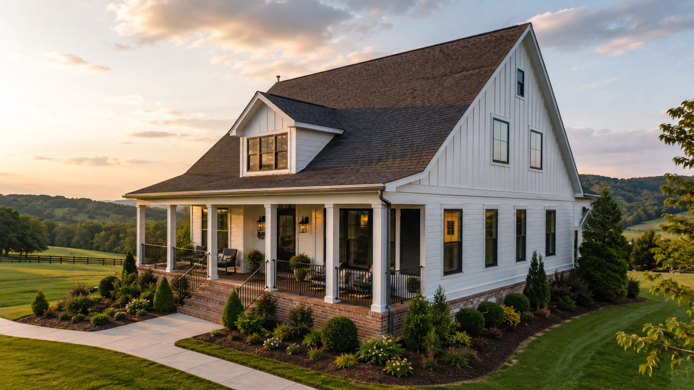
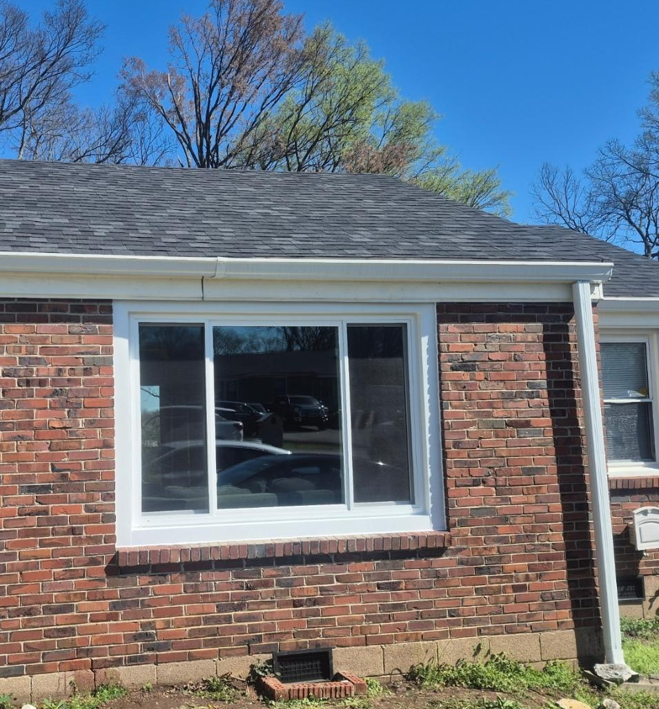
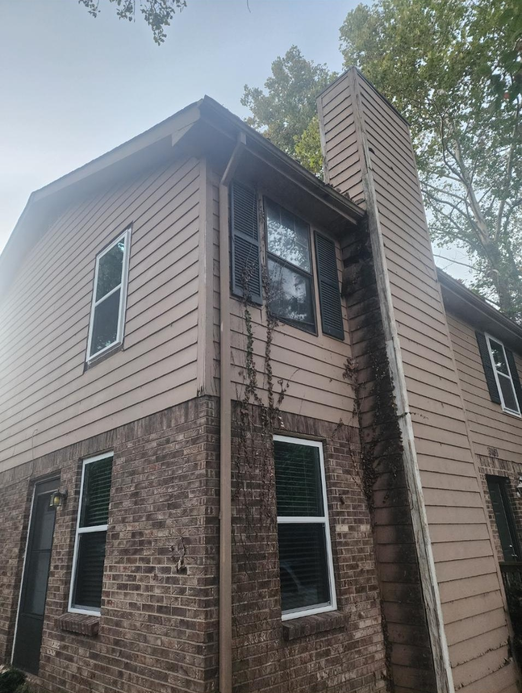
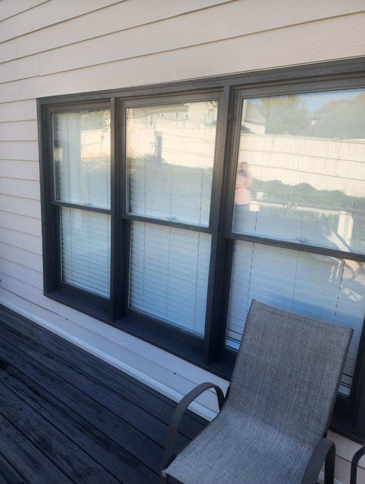

Local Window Replacement
Replacement Windows For Thompson's Station Homes
Thompson’s Station homeowners often want window replacement that supports rural views, modern comfort, and the long-term value of a Williamson County home.
Homes in Thompson’s Station can face sun exposure, comfort swings, and windows that no longer meet expectations for efficiency or appearance. Blue Haven Windows provides a helpful process built around listening, product education, and quality installation.
We serve Thompson’s Station neighborhoods near Tollgate Village, Canterbury, Critterland, Bethesda, and surrounding Williamson County areas.

Window Services
Services Available In Thompson's Station
Explore the window services most Thompson's Station homeowners compare before scheduling an estimate.
Local Process
A Clear, Low-Pressure Process
- 1. Request your free estimate.
Share your goals, concerns, and location in Thompson's Station.
- 2. Review window options.
Stephen explains product choices, installation details, warranty options, and fair pricing.
- 3. Install with confidence.
The Blue Haven Windows team focuses on communication, clean work, and long-term value.
Internal Links
Nearby Service Areas
Recent Reviews
Homeowners Mention Honesty, Communication, And Fair Pricing
★★★★★
"Great experience with Blue Haven Windows! Easy to work with, great communication, and the windows turned out awesome."
Julie Kunkleman
★★★★★
"You won't find anyone more hardworking or honest than the team at Blue Haven Windows."
Chip Waller
Project Photos
Finished Window Project Photos
Blue Haven Windows is building a larger before-and-after library. For now, here are finished installation photos showing completed window projects and product details.

Finished Exterior Window
Completed installation with clean white trim.

Finished Two-Story Update
Updated windows shown from the exterior.

Finished Modern Frames
Dark-framed replacement windows after installation.
FAQ
Thompson's Station Window Replacement FAQ
Does Blue Haven Windows serve Thompson's Station TN?
Yes. Blue Haven Windows helps Thompson’s Station homeowners compare replacement window and installation options.
Can replacement windows protect views in Thompson's Station homes?
Yes. Picture windows, casements, and other styles can improve sightlines while upgrading comfort and efficiency.
How do I start a Thompson's Station estimate?
Use the estimate form or call (615) 987-0593 to discuss your project directly with Blue Haven Windows.
Limited-Time Promotion
Ready For Replacement Windows In Thompson's Station?
Ask about Buy 2 Windows, Get 2 Free, call Blue Haven Windows, or send a message through the estimate form when you are ready to talk through your project.